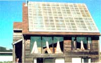
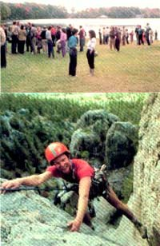
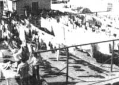
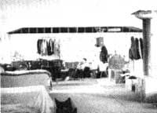
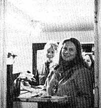

Intentional Communities, Some Inside Views
By the Mother Earth News editors
January/February 1985
PART TWO
In MOTHER NO. 88, we published the first of our member-written reports on a variety of intentional communities, gathered for us by The Community Referral Service (P. 0. Box 2672, Eugene, OR 97402), which publishes a descriptive list of over 125 such outfits in the United Stales. (The list costs $4.00 plus $1.00 postage and handling.) These communities-in which like-minded people pool their knowledge, energies, and resources in an endeavor to fulfill their particular needs, desires, and dreams-often offer viable alternative lifestyles. But as we noted at the beginning of this series, we are not endorsing any particular place. Should cooperative living appeal to you, it's always wise to check out carefully any community before becoming involved.
Charles Betterton and Linda Guinn
If you see your life as an adventure in self development, you may be interested in the a goals and accomplishments of the people of Stelle, Illinois. Stelle is presently striving to evolve from a private, intentional community into an ecumenical New Age city, where people can live in harmony with the natural environment, develop more loving relationships with each other, work toward inner spiritual completeness, and be responsible for their own lives (rather than yielding that responsibility to "experts" or "gurus").
The Stelle Group is a not-for-profit, philosophical organization based upon The Ultimate Frontier, by Ekial Kueshana, a book dedicated to improving and maintaining the best of civilization. During the 1960's, we were located in Chicago, but in 1970 we purchased 240 acres of land 90 miles south of the city and began to actualize our plans and preparations. Members donated their time and talents to build streets, sidewalks, homes, a factory, and water and sewage treatment facilities. Over the subsequent decade, our model city was further planned and developed by a number of people who recognized the benefits of living in an environment that supports the pursuit of excellence.
In June, 1982, in order to facilitate Stelle's growth, we decided to open the community to other individuals and organizations who wanted to share in the self-development and self-sufficiency of life in this model city but who didn't necessarily want to join The Stelle Group. The results have been exciting. More than 50% of the Stelle "town" is now made up of nonmembers.
Then, in April, 1983, we incorporated a new not-for-profit organization, the Stelle Community Association, to provide municipal services and to serve as a forum for self-government. Stelle residents hold monthly community meetings to discuss issues proposed through a referendum process that any member can initiate; decisions are made by majority vote. The community's day-to-day administrative affairs are managed by an elected board of directors.
Stelle presently consists of 125 residents in 44 homes with varied religious and philosophical beliefs, assorted employment situations, and individual dietary preferences. Our community also includes schools, greenhouses, an orchard, a holistic health center, a factory, several privately owned businesses, and 200 acres of farmland. All in all, Stelle provides a beautiful, serene environment that excludes many of the negative aspects of contemporary society. There's no prejudice, onsite produced pollution, or crime. Even the minor annoyances of noise, traffic congestion, and public smoking have been eliminated, and the rare piece of litter is sure to be picked up quickly.
But there's more to Stelle than peace and beauty. Because we believe that most people actualize only about 10% of their real capacity for health, happiness, and success, the focus of our lives is self-development. This is manifested in a continual stream of health-related workshops, philosophical programs, fellowship services, and seminars on various aspects of the human potential movement.
On a practical level, we acquire new skills and talents through training programs and actual work experiences, with about half of us actually employed in the community and the other half commuting to jobs in nearby towns. Community businesses include an injection-molded plastic operation, a machine shop, a construction company, an energy conservation service, and a landscaping business. We also have a food co-op, which operates on an honor system, our own telephone mutual, a cooperative video center, a state-chartered credit union, a vehicle co-op, and various other cooperatives that help us to use our financial resources effectively.
On the emotional level, we encourage the development of strong, stable homes that nurture loving relationships in which the personal development of each partner is supported. Stelle also provides a warm, extended-family lifestyle that is reinforced by community socials held at least once a month. When the inevitable conflicts between people do occur, we try to resolve our differences through a nonbinding mediation process.
Though we believe we can uplift our society by improving ourselves as individuals, we also know that helping our children to surpass us is the key to an improved future civilization. Therefore, we've spent 20 years developing an educational system. Education is a life-long process, and in Stelle it begins at birth. Because a child's first six years are crucial in the formation of his or her basic attitudes about life, parents in our early learning programs devote an average of three hours daily to educating their children. As a result, these youngsters can often read and write easily and naturally at a third-grade level by age six. Programs for child development and learning include a supplementary Montessorian classroom and a Morningschool in which children and their parents work together in a classroom setting. In addition, families receive a weekly home visit from an educational staff guide. A Parents' Resource Center provides books, learning tools, weekly films, and field trips.
At age six, children graduate to the Learning Center, which is the academic equivalent of an elementary, junior, and senior high school. Here, they are taught individually and in small groups by professional teachers, though parents remain highly involved. Students learn the traditional school subjects... with emphasis on mastering reading, writing, and math, which give them independence and the capability of self-education. We balance the schedule with such courses as art and aesthetic appreciation, music, physical development, and t'ai chi. We do not, however, give grades. If students function at a low level in some subject, we encourage them to work on that area until it's mastered.
To share what we've learned about education with other parents, The Stelle Group publishes a Parenting/or Excellence newsletter and sponsors a comprehensive, two-day "Parenting for Excellence" seminar.
The Stelle Group is also developing the means to survive possible future economic and political strife, as well as disasters caused by the destructive forces of nature. With this goal in mind, we established an Office of Technology in 1978 to research and develop various self-sufficiency systems and technologies. In 1980, for example, the U.S. Department of Energy awarded The Stelle Group a $50,000 grant to compile a design package for a 1,000-gallon-per-day fuel-alcohol production plant. (The 185-page package is now available for $17.50 from National Technical Information Services, 5285 Port Royal Rd., Springfield, VA 22161; it includes an illustrated report and specifications on the pilot plant we built, operating procedures, regulatory information, and financial work sheets. Ask for NTIS Report No. DE 82017453.)
In 1983, we received a $52,000 grant from the Illinois Department of Energy and Natural Resources to build and demonstrate a commercial-size greenhouse using a new liquid-foam insulation system that dramatically reduces energy consumption. And we are currently attempting to determine how best to integrate solar greenhouses, confinement fish raising, and alcohol fuel into a controlled environment system.
The results of The Stelle Group's experience with various self-sufficiency techniques and technologies are made available to the public through special project reports and Personal Preparedness, a newsletter that presents basic self-sufficiency and survival information at a subscription rate of $15 per year.
Stelle is one of an estimated 100,000 intentional communities throughout the world that are dedicated to personal growth and to serving the needs of humanity and society. Yet, if intentional communities are defined as places espousing "alternative lifestyles," then Stelle is perhaps an "alternative alternative," since we differ from most intentional communities in some significant ways. First, we're not communal; we actively encourage individuals to achieve their own personal prosperity. This, of course, means that we each earn our own money and spend it as we judge best.
Then, too, we are neither counter-culture nor antitechnology. Instead, we're searching for technology that's so advanced that it's efficient, cost-effective, and ecologically sound.
And while most intentional communities plan to remain small and somewhat specialized in focus, we expect to grow into a large city of up to a quarter of a million people dedicated to New Age concepts, while providing the autonomy and high standard of living so important to most Americans.
If you'd like to know more about Stelle, we offer two free brochures and a free newsletter. We also schedule several guest programs each year which provide weekend and week-long opportunities to experience life in our unique community. For more information, please write The Stelle Group, Box 330, Stelle, IL 60919.
The International Emissary Community, British Columbia
Dave Thatcher
A Zulu tribal chieftain, an airline stewardess, an Italian princess, and a solar energy consultant: What do all of these individuals have in common? Well, all are friends dedicated to expressing their innate potential, and all are associated with the International Emissary Society.
This nonprofit organization, among its other activites, operates several large communities and communal homes around the world. The facilities haven't been established to save money, grow organic gardens, or pioneer complementary healing techniques, though their members have developed expertise in these areas. Instead, our passionate concern is with spiritual maturity. Our sense of community is based upon our love and respect for life and its inherent design. We offer spiritual leadership courses, assist any who wish to reveal their potential, and celebrate the myriad ways in which the awakening consciousness of mankind is currently being made evident.
Our association began in 1932, when Lloyd Meeker, the son of a midwestern farmer and minister, discovered-in the course of searching for his purpose-a spiritual identity. In 1940 he met Lord Martin Cecil, who, not long before, had left his family's ancestral home in England to travel the wilderness of British Columbia. These men immediately found a shared sense of commission, and, as they continued living with vision and integrity, many chose to associate with them.
Today, Emissaries reside in some 200 centers, including communal facilities, from New York to California and from England to South Africa, but many members can be found dwelling in suburban homes and working in cities and on farms. Rather than spotlighting any one of our 14 larger communities, I believe it would be more useful to attempt to convey the essence of our collective experience as a body of friends and, secondarily, as an organization spanning six continents.
Each center is a unique combination of factors and reflects the individuals who compose it. In some communities, several residents are employed in the local economy and pay room and board, or cover such costs as are required: the mortgage, house maintenance, food, etc.... some operate businesses, from medical offices to farms and janitorial services... and others, occupied with running homes and raising children, are supported by those generating income.
Communal living proves useful in bringing together people with diverse personalities and backgrounds, since it requires each individual to interact in a deep and genuine way in order for the necessary blending to occur. For example, I correspond with and visit intentional communities throughout the world. However, before departing for, say, Denmark or Louisiana, I have to take into account the necessities of my home, where 125 people reside. Will there be a sufficient number on hand to take care of the canning and juicing at harvest time? Perhaps I need to take a paying position locally and bring home an income for a period of time. Perhaps I don't need to travel at all! In short, each of us is required to be aware of his or her own sphere of activity and more, since our worlds are larger than our tiny communities.
You should also know that we find nuclear family life to be an important aspect within the context of our larger community, and a powerful means of focusing creative living.
Our children are most often educated in the public school system. This is a mixed blessing, but it has appeared valuable, thus far, for them to be exposed to "everyday" society. Even so, we find that the rich quality of our lifestyle remains the dominant factor in our young ones' lives.
Central to our collective function is our respect for coordination. We each freely offer our unique views to those in coordinating positions, permitting an overall perspective to be brought into focus. We recognize that, alone, one person doesn't often see all the factors in any given situation, and that an elevated perspective is essential. Functioning together in this shared process of creative living is a far cry from the self-serving attitudes so prevalent in the world.
We are also active beyond the confines of our international community. Professionals in various fields offer lectures and workshops or produce publications. Business Dynamics, for example, is a newsletter published by our 100 Mile House business group, which receives contributions from around the world. The Whole Health Institute, an association of healing practitioners, presents workshops worldwide and publishes Healing Currents monthly. A wilderness training program, "Educo," offers one- and two-week rigorous experiences of self-discovery to the adventurous of all ages. Here at 100 Mile House, we publish Integrity International, a monthly newsletter which circulates in nearly 60 countries.
During this past year, various Emissaries participated in the "Planetary Initiative for the World We Choose" project, which culminated in a conference at the University of Toronto in June, 1983. Since 1980, Emissaries have assisted with the annual Human Unity Conference initiated by Sant Kerpal Singh in 1974. And The Foundation for Universal Unity, based at our headquarters in Colorado, hosted the 1983 Human Unity Conference in England.
We believe that a new world is appearing, while the old one is creaking at its seams. The world we are discovering is but an extension of our consciousness. As we alter our outlook, a national border may disappear, a battle may cease, or-more immediately-a new friend may be discovered. There are increasing numbers of individuals and organizations learning that beyond paths, disciplines, and techniques, there's an implicit design to life that works. Our wish is to align with that design in an increasingly intelligent and balanced way.
If what has been mentioned here strikes a resonant chord with you, and you would like further information, please write to David Thatcher, Box 9, 100 Mile House, B.C., Canada V0K 2E0 .
Roandoak of God, California
Zonah Baruth
Roandoak of God is often referred to as the "Missionary Outpost in Morro Bay," and in these troubled times, we believe that our mission is badly needed. Seven days a week, 24 hours a day, we are open to anyone who might need help.
In 1970, after more than a decade of working with the poor and troubled, Galeb and Rachel Ashurst dedicated their home and property to those in need and called their place Roandoak of God. Since then, thousands of people (around 800 a year) of all ages, national origins, and backgrounds have come here: the defeated and the demanding, the meek and the angrily desperate, those seeking a meaningful life-way and those wanting a temporary helping hand. But all are somehow in need, and we at Roandoak are privileged to share what we have with them.
Immediate needs are met first: a meal, a shower, a clean bed, fresh clothing, someone to listen and be concerned, and-for specific problems, such as alcoholism or drug addiction-special care. Whatever obstacle an individual faces, there will most likely be a man or woman here who has struggled with the same thing and overcome it.
But that's just the beginning, because Roandoak of God is not a flophouse for professional idlers. Rather, it's a Christian commune, and-for those who stay here for any length of time-there's a fairly regimented lifestyle. At 6:00 AM our bell announces reveille. At 6:30 it's rung for breakfast, and again at 7:15 for work assignments. At noon the bell signals lunch, and at 5:30, dinner. At 7:00 PM the bell sounds again for church service. Noise curfew is at 10:00 PM, and lights must be turned out at 11:00 PM.
All children who are old enough spend the greater part of the day at grade school, where they're taught by qualified commune members from a nationally used Christian curriculum. Younger children are able to attend our preschool or nursery care center during the day. Most enjoy learning the Bible at Children's Church in the evenings. Here, puppets, costumes, art projects, and more combine to give the children a happy and meaningful conclusion to their active day.
Many facets of daily life at Roandoak of God remain fairly communal. For example, everyone lives on the mission property, and all meals are served in the communal dining hall. Laundry is done in the large commercial wash room by appointed laundry stewards. Attendance at church service is required on Sunday and Monday nights, while the other four weeknight services are on a voluntary basis. Donated clothing is stored in our big red barn, which also houses the woodworking shop, sewing room, supply storage, and commune library. From there, garments are distributed according to need.
All those who are capable of work are expected to do it, and our work programs center upon four basic functions. The first is therapy. It's a well-known fact that getting a life in order requires leading a well-ordered life, and that to feel worthwhile it's necessary to do useful and worthwhile things. Some of our newcomers have never before experienced constructive and productive activity. For others, work becomes a welcome distraction from habitual brooding, self-criticism, and regret. And for all, we've found labor to be a social, meaningful, and therapeutic activity.
The second major function of our work program is training. Because nearly all attendees will, sooner or later, leave the commune, we know that the most important practical help we can give them is the ability to earn a decent living. However, a great many of our newcomers have had little or no work experience, and an even greater number have no specific marketable skills. Here they can learn efficient work habits: to be on time, to give an honest effort, to persevere through self-discipline, to work cooperatively with others, to accept responsibility and fulfill it, and to derive satisfaction from a job well done.
The third major function of our work program is the maintenance of the commune, which involves kitchen work, housekeeping, laundry, sewing, child care, gardening, auto repair, and-because we construct our own buildings-carpentry, plumbing, electrical work, welding, masonry, and so on. Because of the size of our operation, there's an office staff, and because of the nature of our mission, there are planning, counseling, and spiritual work.
Finally, our work program produces income. (We're about 95% self-supporting.) Repairing our own clothing, for example, has taken second place to the sewing of quilts and other products that can be sold. Our office staffers manage to find the "spare time" for some outside employment, and those with skills in the building trades stop working on our own projects to do paying outside work when the opportunity arises.
Our main efforts to provide income, though, are focused on the creation of industries. A few years ago, we acquired two old fishing boats. Over time, we restored them, trained ourselves in seamanship and commercial fishing, and set out onto the ocean. Today, this operation provides a large part of our cash flow.
The people of our satellite commune in Paso Robles have not yet been able to develop our planned agricultural enterprise, because of a lack of starting capital. However, they have acquired a reputation among local ranchers and farmers as quality workers.
After a year's stay, a person may apply for permanent membership in Roandoak of God. In order to be admitted, an individual must read the entire Bible... memorize Acts, chapter 2... be voted on by the entire permanent membership... and receive final approval by the pastor. These members give all they have to the welfare of the commune and become "part owners," in a sense, of the entire Roandoak of God operation. Their votes help guide and determine the future of our work. This contract may be nullified either by the person or-in the case of continual bad behavior-by a two-thirds vote of the entire permanent membership. Elders, who are usually those who've been commune members for at least five years (currently they number 15), form the basic governing body of the commune, with the pastor retaining veto and emergency-response power.
The people who have stayed on for years are a very close-knit group. Like one big, evergrowing family, we have our trials and difficulties. Certainly, in a commune nobody can hide his or her faults. But as we struggle with our own imperfections, we gain more understanding of each other. Generally, despite the lack of money, we're a very useful, happy, colorful, capable, and talented community. I've never regretted making my own commitment to stay 7-1/2 years ago.
And you, though you may not be homeless or troubled, are welcome to come and see this wonderful place for yourself. We may not have the fanciest furniture, and we may serve you rice and beans, but we trust that you'll also receive the love and understanding that seem to abound in our midst. These are the "products" that we really specialize in. They're what Roandoak of God is all about.
For more information, write to Roandoak of God, 455-A Chorro Creek Rd., Morro Bay, CA 93442.
|
 PHOTOS COURTESY OF THE INTERNATIONAL EMISSARY COMMUNITY One day's laundry at Roandoak of God. Line-drying helps cut down on energy costs. |
 PHOTOS BY A.P. BARUTH In the Roandoak men's dorm, each person has his own bed, drawers, and perhaps a chair. |
 Roandoak food is free to all who are in need. |
|
 |
 |
 |